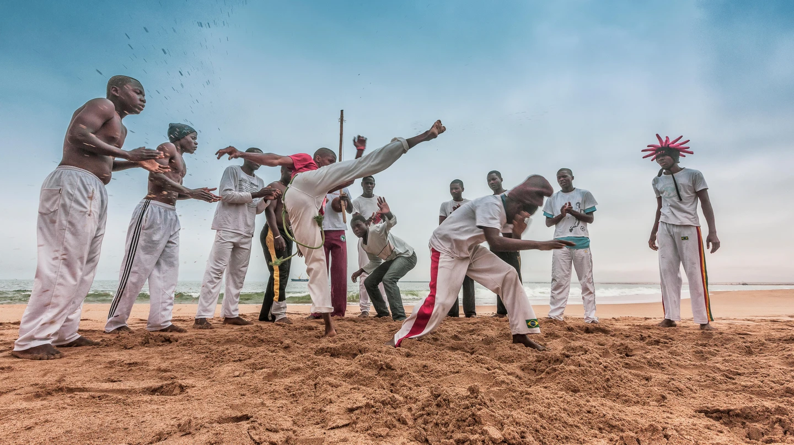
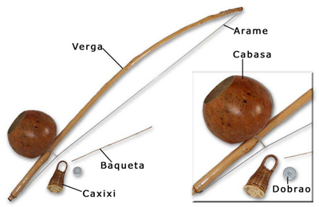

What is Capoeira?
Capoeira is an Afro-Brazilian martial art created by the
African and Indigenous people of Brazil during the time of Portuguese colonization.
Capoeira has deep roots in the spiritual, music, and movement traditions of the people of Africa and Brazil.
When the people were going through the intense hardship of slavery, capoeira helped many to have hope,
connection to their ancestors, and the skills and techniques that could eventually allow them to be free from
slavery. Many people escaped slavery and the plantations and escaped to communities called Quilombos where
they could live free from the oppression of the Portuguese. After the practice of slavery was declared
illegal in Brazil, capoeira was also made illegal in 1888. This forced people who practiced capoeira
to hide their training and disguise it as a dance.
Capoeira Moves
There are many moves in capoeira. Here are many of the movements organized into categories.
The terms are in Portuguese and are often words that describe metaphorically how the move looks.
Most Common Moves
- Movement
- Ginga
- Cadeira/Paralelo
- Aú
- Balanço
- Bananeira
- Macaco
- Negativa
- Rolê
- Troca de Pé
- Ponte
- Queda de Rins
***The Ginga is the base movement of capoeira that starts the motion for many offensive, defensive, evasive,
and acrobatic moves. Many people mistake this move as a dance because the move involves "swaying" or
"swinging" from one side to the other. However, the ginga is a powerful technique that can allow the practitioner
to build up the necessary momentum for many powerful strikes or evasive escapes.
The ginga is often used to give a few moments to breathe and think in between sequences of
movements or kicks and dodges in the roda.***
Defensive movements
Defensive movements often involve getting low to stay under kicks and attacks.
- Cocorinha
- Esquiva
- Queda de Quatro
- Queda de Tres
Kicks
- Armada
- Bênção
- Chapa
- Escorpião
- Gancho
- Martelo
- Meia-lua de Compasso
- Meia-lua de Frente
- Ponteira
- Queixada
- Raiz
- S-Dobrado
- Voo do Morcego
There are many kicks in capoeira. The Meia-lua de Frente is a playful kick that means
"half moon of the front" and is used to see how the other capoeira player will respond.
The Martelo means "hammer" and is a very powerful direct kick. The 3 main circular kicks of capoeira are
the Armada, Meia-lua de Compasso, and Queixada. They involve rotating and twisting the torso to store
energy and momentum that is transferred to the legs for a powerful kick.
Head butts
- Arpão de Cabeça
- Cabeçada
- Escorumelo
Takedowns
- Açoite de Braço
- Arrastão
- Balão de Lado
- Banda
- Boca de Calça
- Corta-Capim
- Cruz
- Negativa Derrubando
- Paulista
- Tesoura
- Tombo-de-Ladeira
- Vingativa
Floreios
The floreios are acrobatics that often deceive people when viewing capoeira to
think that it is not actually a powerful and deadly martial art.
Deception is an essential part of capoeira. Many moves are flashy in order to lure in an opponent
or to distract them from a surprise attack that is coming.
- Bandeira
- Folha Seca
- Relógio
- Pião de Mão
- Pião de Cabeça
- Carpado
- Mariposa
- Helicóptero
- Armada Dupla
Music
Capoeira is done to the music of the berimbau, pandeiro, atabaque, and sometimes bells and other percussion
instruments. The atabaque is a tall drum played with the hands, and the pandeiro is like a tambourine with a
drum head attached to it. The berimbau leads the games of capoeira and is made from a long metal wire attached
to a flexible bent stick with a gourd and string pinching the wire to make the gourd resonate when the wire is
struck. A coin or stone is used by the berimbau player to change the sound of the string as it vibrates.
There are three main tones on the berimbau including a buzz sound, a low sound, and a high sound.
These tones are used to play the rhythms of capoeira that determine how the games, or 'rodas', are played.

↑ The Berimbau, a staple instrument in capoeira. ↑
Songs:
- Paranauê Paraná
- Sou Capoeira
- Sou Jogador
- A Hora E Essa
The Roda: Putting It All Together
'Roda' in Portuguese means circle or wheel. In capoeira, a 'roda' is the game where students play each other,
practice their moves, challenge one another, and train thier reflexes. The game is played in a circle.
The musicians are at the top of the circle and control the speed and kind of capoeira that will be played.
Two people play capoeira at a time, and the rest of the people keep the circle full of energy through clapping
and singing. The songs have a call and response with the vocals typical of many African musical traditions.
The lyrics of the songs often tell about the history of capoeira, struggles of life, messages of wisdom, cautionary
tales, and other diverse topics.
Click here to see a roda in action.